- Přecházíte z MacDiveJaký soubor exportovat a jak přejít, aniž byste o něco přišli.
- Stahování z počítačeShearwater a další počítače s Bluetooth, nebo kabel na Macu.
- Garmin DescentImport souborů .fit z hodinek nebo z Garmin Connect.
Něco nefunguje? Viz Řešení potíží. Thermocline je logbook: ukazuje, co zaznamenal váš potápěčský počítač, a nikdy nepočítá dekompresi.
Získejte aplikaci
Thermocline je pouze pro zařízení Apple: iPhone, iPad, Mac a Apple Watch. Během bety se instaluje přes aplikaci TestFlight od Applu.
| Úkon | iPhone a iPad | Mac |
|---|---|---|
| Zapojte se do bety | Zapojte se do bety: jeden odkaz pro iPhone, iPad, Mac a Apple Watch. Otevřete ho na každém zařízení a nainstalujte z TestFlightu. Aplikace pro Apple Watch přichází s aplikací pro iPhone. Všechna zařízení sdílejí stejný logbook přes iCloud. | |
| Do bety pro iPhone jste se zapojili před 18. listopadem 2026 | Ta aplikace se přesunula. Viz přechod ze staré aplikace pro iPhone. | |
| Udržujte aktuální verzi | Když TestFlight nabídne nový build, aktualizujte každé zařízení, které používáte. Starší build přestane odesílat změny, dokud ho neaktualizujete, a sám to oznámí. Nic se neztratí. | |
První spuštění a prohlídka
Při prvním spuštění se aplikace zeptá na vaše jméno, jednotky a odkud vaše ponory pocházejí. Jednotky se ukládají metricky; jejich změna mění jen zobrazení.
| Úkon | iPhone a iPad | Mac |
|---|---|---|
| Nastavení | Karta Profil | Thermocline → Nastavení |
| Prohlídka | Profil → Nápověda → Zobrazit prohlídku | Nápověda → Prohlídka aplikace |
Prohlídka vás provede každou obrazovkou na ukázkovém logbooku, ne na vašem.
Snímky obrazovky na této stránce ukazují ukázkový logbook z prohlídky: ponory a lokality jsou smyšlené. Klepnutím na snímek ho zobrazíte v plné velikosti.

Přeneste svůj logbook
Thermocline načte MacDive (jeho složku, XML nebo UDDF), databázi Shearwater Cloud, soubory Garmin .fit, UDDF z libovolného logbooku a CSV. Sami vyberete, které ponory přidat, a vše, co nedokáže přečíst, se vypíše, nikdy se tiše nezahodí.
| Úkon | iPhone a iPad | Mac |
|---|---|---|
| Import souboru | Profil → Vaše data → Importovat soubor logbooku, pak ho vyberte z iCloud Drive nebo ze Souborů. | Příkaz importu v nabídce Soubor (⇧⌘I). |
| Soubory Garmin .fit | Vyberte několik najednou. | Vyberte několik, nebo celou složku. |
| Složka MacDive, s fotkami | Jen na Macu. Fotky přeneste později pomocí aplikace pro Mac. | Soubor → Importovat z MacDive… a vyberte složku MacDive: ponory, fotky z ponorů a fotky kartiček. Soubory MacDive se nemění. |
| Výběr ponorů | Zrušte zaškrtnutí těch, které nechcete, a pak Import. | |
| Vrácení importu | Bod obnovení Před importem, uložený před každým importem více než jednoho ponoru. | Vrátit import… ve zprávě o importu, nebo stejný bod obnovení. |
Po dokončení importu zpráva ukáže, kolik ponorů se přidalo, které položky nebyly importovány a proč, a co je potřeba zkontrolovat. Ponory, jejichž soubor neobsahoval plyn, čekají v K potvrzení.
Který soubor z MacDive použít
MacDive vám může dát své XML, své UDDF, nebo (na Macu) celou svou složku. Nenesou stejné údaje:
| Co obsahuje | MacDive XML | MacDive UDDF | Složka MacDive (Mac) |
|---|---|---|---|
| Ponory, lokality, parťáci, plyny | Ano | Ano | Ano |
| Velikosti láhví | Ano | Ne: jeho velikosti nejsou vodní objemy, proto zůstanou prázdné | Ano |
| Profily hloubky | Každý ponor | Každý ponor | Všechny kromě ponorů, které MacDive stáhl na iPhonu nebo iPadu a ukládá je šifrované |
| NDL a ppO₂ z počítače v průběhu ponoru | Ano | Ne | Ano, kromě těch šifrovaných ponorů |
| CNS z počítače | Ano | Ne | Ano |
| Výstroj, štítky a typy ponoru | Ano | Ne | Ano |
| Fotky z ponorů a fotky kartiček | Ne | Ne | Ano |
| Úkon | iPhone a iPad | Mac |
|---|---|---|
| Nejlepší postup | Exportujte ponory z MacDive jako XML, uložte soubor na iCloud Drive a importujte ho. | Importujte složku MacDive a pak navrch XML. XML doplní profily, NDL a ppO₂ šifrovaných ponorů. |
| UDDF už máte importované | Importujte i XML. Ponory, které už v logbooku máte, se spárují a nepřidají znovu, a doplní se jen to, co chybí, včetně velikostí láhví. Nic, co jste zadali nebo opravili, se nezmění. | |
Hodinky Garmin Descent
Garmin Descent ukládá jeden soubor .fit na každý ponor. Získat je můžete dvěma způsoby:
- Z hodinek: připojte je kabelem k Macu a otevřete složku GARMIN → Activity. Na Macu můžete importovat celou složku GARMIN; soubory, které nejsou ponory, například běhy a nastavení, se přeskočí.
- Z Garmin Connect: otevřete ponor a zvolte Exportovat původní. Získáte .zip: nejdřív ho rozbalte a pak importujte soubor .fit uvnitř.
Polohy pocházejí z GPS hodinek. Při ponoru v proudu hodinky uloží jako začátek místo, kde jste se vynořili; import najde, kde jste skutečně vstoupili do vody, takže se ponor přiřadí k té lokalitě. Další vraky, kolem kterých jste proplouvali, připište do poznámek.

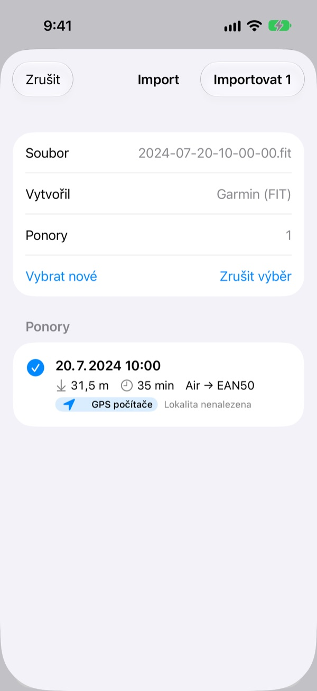
Stahování ponorů z počítače
Nejdřív přepněte potápěčský počítač do režimu Bluetooth. Na počítači Shearwater: Menu → Bluetooth. Vydrží v něm asi dvě minuty. Stahují se jen ponory novější než vaše poslední stahování.
| Úkon | iPhone a iPad | Mac |
|---|---|---|
| Otevření | Logbook → Stáhnout ponory | Soubor → Stáhnout z potápěčského počítače… (⇧⌘D) |
| Připojení | Bluetooth. Vyberte svůj počítač v části V okolí; poprvé zadejte PIN zobrazený na jeho displeji. | Zvolte Bluetooth nebo USB kabel. U kabelu vyberte model svého počítače a jeho port a postupujte podle Než začnete. |
| Dokončení | Zrušte zaškrtnutí ponorů, které nechcete, a pak Ponechat. Nezaškrtnuté ponory zůstanou v počítači a příště se nabídnou znovu. | Stáhnout. |
Otázka na zónu hodin. Při prvním stahování z každého počítače se objeví otázka Na jakou zónu jsou nastaveny hodiny počítače? Většina počítačů zaznamenává místní čas bez časového pásma, takže díky tomu máte správné časy ponorů i na cestách. Odpověď se pro daný počítač zapamatuje.
Po výběru ponorů je můžete jeden po druhém projít a nastavit lokalitu a plyny, nebo zvolit Dokončit později: počkají v K potvrzení.
Smazali jste ponor a chcete ho zpět? Zapněte Stáhnout všechny ponory z počítače. Trvá to déle; ponory, které už v logbooku máte, se přeskočí.

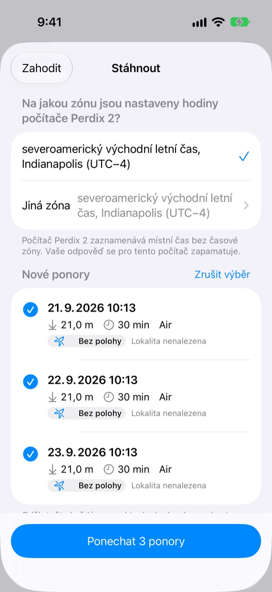
Shearwater Predator a Petrel 1
Používají starší Bluetooth (Bluetooth Classic), které iPhony a iPady používat neumí. Na Macu nejprve spárujte počítač v Nastavení systému → Bluetooth a pak v okně stahování zvolte USB kabel: jeho port se může objevit v seznamu. Přepněte počítač do režimu přenosu přes Bluetooth a zvolte Stáhnout. Na skutečném Predatoru ani Petrelu 1 to zatím vyzkoušené nebylo, takže prosím pošlete log stahování, ať to funguje, nebo ne. Na iPhonu jejich ponory místo toho importujte ze Shearwater Cloud nebo ze souboru UDDF.
Podporované počítače
Thermocline stahuje pomocí libdivecomputer, open-source knihovny, kterou sdílí mnoho logbooků. Zná několik set modelů od většiny výrobců. Svůj najdete tak, že otevřete obrazovku stahování a zvolíte Podporované počítače; u každého je uvedeno, zda funguje na iPhonu a iPadu, nebo potřebuje Mac.
| Připojení | Kde funguje | Zatím vyzkoušeno |
|---|---|---|
| Bluetooth LE | iPhone, iPad a Mac | Shearwater Perdix a Perdix 2. Ostatní modely by měly fungovat: dejte nám vědět. |
| USB nebo sériový kabel | Jen Mac | Připraveno, zatím nevyzkoušeno na skutečném hardwaru. |
| Bluetooth Classic (Predator, Petrel 1 a další starší modely) | Jen Mac, spárovaný jako sériový port (jak) | Zatím nevyzkoušeno. |
| Garmin Descent (soubory .fit) | Import na iPhonu, iPadu a Macu (jak) | Ponory z Descent, včetně ponorů v proudu. |
Máte počítač, který jsme nezkoušeli? Pomozte nám ho otestovat.
Potvrzení lokality a plynů
Ponory, kterým ještě chybí lokalita nebo potvrzené plyny, čekají v K potvrzení. Nic jim nebrání v uložení; doplňte je, kdy budete chtít.
| Úkon | iPhone a iPad | Mac |
|---|---|---|
| Kde je najdete | Nahoře v Logbook, v části K potvrzení. | Přejít → K potvrzení (⌘2) |
| Potvrzení | Otevřete ponor, pak Vybrat lokalitu a klepněte na Ano, tyto plyny jsou správně (nebo Opravit plyn…). | Banner u každého ponoru nabízí Potvrdit lokalitu a plyny…, Vybrat lokalitu… nebo Potvrdit plyny…. |
Thermocline navrhne lokalitu podle polohy ponoru: nejdřív vaše vlastní lokality, pak vestavěné seznamy více než 76 000 potápěčských lokalit a vraků, které fungují offline.

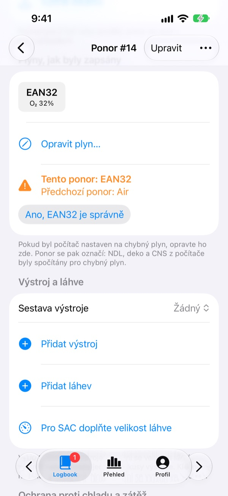
Čtení ponoru
| Úkon | iPhone a iPad | Mac |
|---|---|---|
| Přečtení kteréhokoli okamžiku | Táhněte po grafu. | Najeďte ukazatelem na graf. |
| Ruční zápis ponoru | Logbook → Zapsat ručně | ⌘N |
- Bezpečnostní hodnoty jsou v pevném pruhu nahoře u každého ponoru, vždy na stejném místě.
- Profil: štítky pod grafem zobrazují nebo skrývají Láhev, ppO₂, NDL, SAC, Tepl., CNS a Výstup, jako pruhy Pod sebou nebo jeden Překryv. Štítek dostane jen to, co ponor zaznamenal. NDL je vlastní hodnota počítače a během deko se zastaví, kde červený pás ukazuje zastávky. Na úzkém iPhonu zůstávají štítky na jednom řádku a posouvají se do strany. Vyzkoušejte si to na domovské stránce.
- Rebreathery: z každého počítače nebo souboru, který je zaznamenává, ukazuje pruh ppO₂ setpoint s hlasovaným ppO₂ (a každý článek, pokud je zaznamenán) a odečet uvádí setpoint v daném okamžiku. Přepnutí z diluentu na jakýkoli jiný plyn je označeno jako bailout.
- Spotřeba plynu: klepněte nebo klikněte na Jak? vedle hodnoty SAC a uvidíte každý vstup: láhev, její vodní objem, tlaky, teplotu a korekci pro reálný plyn.
- Úpravy: upravit můžete kterýkoli ponor. Oprava ponechává původní údaj z počítače.
- Zátěž: první klepnutí na + nastaví Bez zátěže, pro ponor, kdy jste žádnou neměli. Klepnutím na − ji odtud vymažete.
- Odkazy v poznámkách: na webové odkazy v poznámkách ponoru lze klepnout nebo kliknout. Až dopíšete, klepněte na Hotovo nad klávesnicí: odkazy se pak zobrazí a odkaz na YouTube nebo Vimeo dostane pod poznámkami tlačítko Přidat … do odkazů na videa. Chcete-li do poznámek znovu psát, zvolte Upravit poznámky.


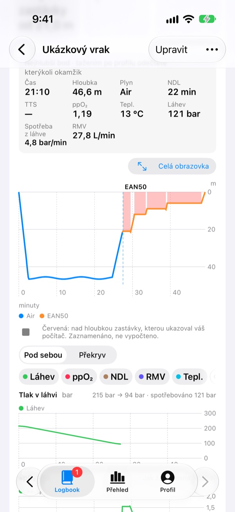


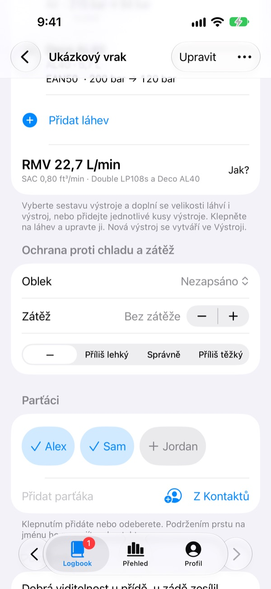

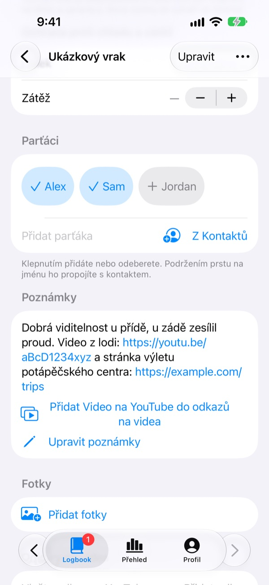

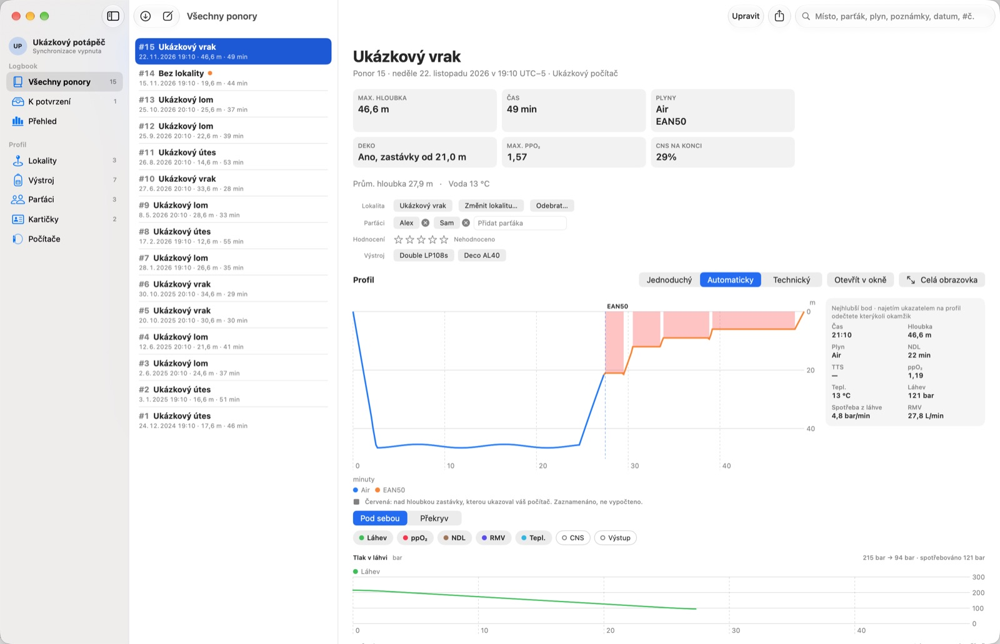
Lokality, polohy a Apple Watch
| Úkon | iPhone a iPad | Mac |
|---|---|---|
| Přidání lokality | Profil → Lokality, pak tlačítko přidání: Najít nebo pojmenovat lokalitu nebo Označit místo zde (GPS). | Přejít → Lokality (⌘4), pak Přidat lokalitu… |
| Zobrazení všech lokalit ze seznamů | Profil → Lokality → Mapa, pak tlačítko glóbu, nebo mapu sevřením prstů úplně oddalte. Vraky jsou oranžové, útesy a potápěčské lokality modré, vaše vlastní lokality červené vlaječky. | Lokality, pak Zobrazit glóbus na panelu nástrojů, nebo úplně oddalte. |
| Nalezení polohy | Lokalita bez polohy nabízí Najít polohu: zkontrolujte návrh na mapě, zadejte souřadnice nebo umístěte špendlík. | Najít polohy… projde všechny lokality bez polohy, jednu po druhé. |
Apple Watch: označte místo na hladině a počká na vás na iPhonu v K potvrzení. Viz Apple Watch.
Polohy lokalit slouží k zápisu do logbooku, ne k navigaci.

Apple Watch
Aplikace pro hodinky dělá jedinou věc: označí, kde jste na hladině, aby se lokalita ponoru snadno zapsala. Ponory nezaznamenává; ty pocházejí z vašeho potápěčského počítače. Vyžaduje watchOS 11 nebo novější a iPhone s Thermocline.
| Úkon | Apple Watch | iPhone |
|---|---|---|
| Instalace | Přichází s aplikací pro iPhone. Pokud v hodinkách není, otevřete na iPhonu aplikaci Watch, najděte Thermocline v části Dostupné aplikace a klepněte na Nainstalovat. Poprvé v hodinkách povolte Thermocline přístup k poloze. | |
| Označení místa | Na hladině nad lokalitou otevřete Thermocline. Počkejte na Dobrý fix a klepněte na Označit místo. Po uložení vám hodinky ťuknou na zápěstí. | Místo dorazí samo. Pokud je iPhone mimo dosah, odešle se, až budou zase spolu. |
| Pojmenování | Nepovinné. Po označení klepněte na Přidat název, nebo později v Označená místa, a název vyslovte, napište rukou nebo naťukejte, například „příď vraku“. Uloží se, když skončíte. | Název se nabídne jako název nové lokality. Můžete ho použít, nebo vybrat jinou lokalitu. |
| Potvrzení | Na hodinkách není co dělat. | Logbook → K potvrzení. iPhone místo vyhledá, když je online, navrhne nejbližší známou lokalitu a ukáže ponor, ke kterému nejspíš patří. Potvrďte ho, nebo zahoďte. |
| Kontrola odeslání | Označená místa ukazují každé místo se stavem Odesláno do iPhonu nebo Čeká na odeslání do iPhonu a mapu. Místo z hodinek zmizí, jakmile ho na iPhonu potvrdíte nebo zahodíte. | Po potvrzení se lokalita synchronizuje do vašich ostatních zařízení jako každá jiná. |

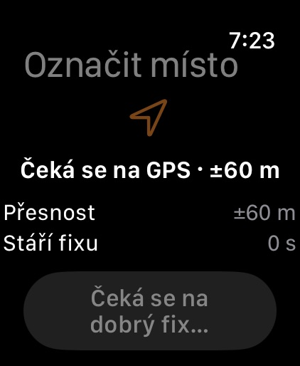

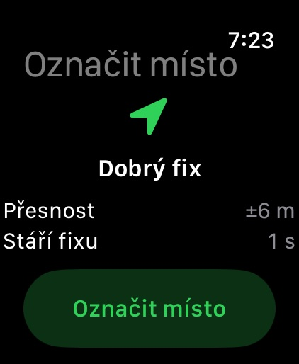

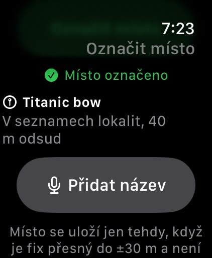

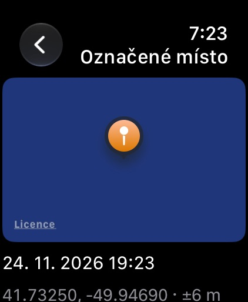
Hodinky uloží místo jen z fixu s přesností ±30 m, který je mladší než 30 sekund, a starou polohu z mezipaměti ignorují. Označujte na hladině, ne pod vodou.
Polohy lokalit slouží k zápisu do logbooku, ne k navigaci.
Výstroj a láhve
| Úkon | iPhone a iPad | Mac |
|---|---|---|
| Otevření výstroje | Profil → Výstroj | Přejít → Výstroj |
- U láhve otevře Model katalog láhví: hledejte podle výrobce nebo modelu (například „PST LP104“) a doplní se zveřejněné rozměry, nebo zadejte vlastní čísla.
- Pro twinset zaškrtněte Dvojče (propojený pár).
- Ocelová láhev s vyraženým +: zapněte Značka plus, pokud poslední tlaková zkouška + zachovala. Zobrazí se například jako 2400+. Tento přepínač se objeví, když se velikosti láhví zobrazují v krychlových stopách.
- Láhve u každého ponoru najdete v části ponoru s plyny (Přidat láhev, Sestava výstroje).
Sloučení a spojení ponorů
- Sloučit je pro jeden ponor zaznamenaný dvěma počítači. Oba záznamy se zachovají a na grafu mezi nimi můžete přepínat.
- Spojit je pro jeden ponor rozdělený na dva krátkým vynořením.
- Thermocline nikdy neudělá ani jedno sám. Když najde pravděpodobnou dvojici, banner nahoře v logbooku nabídne Zkontrolovat.
| Úkon | iPhone a iPad | Mac |
|---|---|---|
| Ručně | Klepněte na Vybrat, zvolte dva ponory, pak Sloučit nebo Spojit. | Vyberte dva ponory a klikněte pravým tlačítkem: Sloučit tyto ponory… nebo Spojit tyto ponory… |
| Rozmysleli jste si to | Hned Vrátit zpět, nebo kdykoli Oddělit tyto ponory u ponoru. | |
Fotky a odkazy na videa
- Přidat fotky u ponoru je zkopíruje z vaší knihovny do logbooku.
- Chcete-li ušetřit místo na iCloudu, zapněte na každém zařízení Synchronizace → Šetřit úložiště iCloud u fotek z ponorů. Fotky se pak místo kopírování propojí s Fotkami na iCloudu a můžete přidávat i videa z knihovny. Thermocline žádá o přístup k Fotkám, jen když tuto volbu zapnete.
- Odkazy na videa: vložte odkaz na YouTube nebo Vimeo pod fotky ponoru. Uloží se jen odkaz. Odkaz, který už je v poznámkách, lze přidat odtud (viz Čtení ponoru).
- Stejné video u více ponorů: vyberte ponory (na iPhonu nejdřív klepněte na Vybrat), zvolte Upravit … ponory… a přidejte odkaz v části Odkazy na videa. Přidá se ke všem vybraným ponorům a odkazy, které už mají, zůstanou zachované.
Přehled a dýchání
Karta Přehled (Přehled v postranním panelu na Macu) shrnuje váš logbook: ponory za rok a za měsíc, hloubky, plyny, rekordy, kde se potápíte a vaši nejčastější lokalitu a parťáka. Nahoře zvolte rozsah, například jeden rok, a klepnutím na kterékoli číslo nebo sloupec uvidíte ponory, které za ním stojí.
- Dýchání ukazuje váš SAC a RMV za všechny ponory v rozsahu, které mají velikost láhve a počáteční a koncový tlak, vážené časem a hloubkou. Klepnutím uvidíte, které ponory se započítaly.
- Některé importované ponory nemají velikost láhve, takže Dýchání může být zpočátku prázdné (viz Který soubor z MacDive použít). Nastavte láhve u svých ponorů, ve Výstroji nebo u každého ponoru, a hodnoty se doplní.

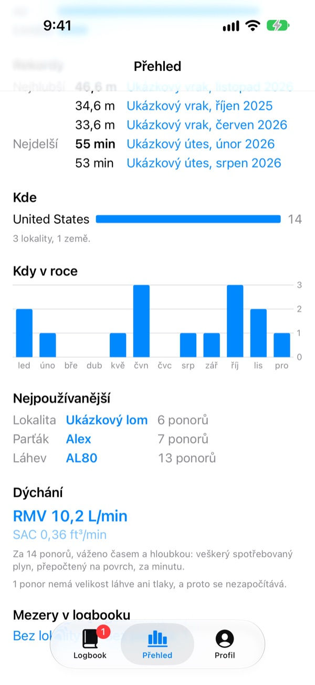
Synchronizace s iCloudem
| Úkon | iPhone a iPad | Mac |
|---|---|---|
| Zapnutí synchronizace | Profil → Synchronizace | Thermocline → Nastavení → Synchronizace |
Všechna zařízení přihlášená ke stejnému účtu Apple pak sdílejí jeden logbook, uložený ve vašem vlastním soukromém iCloudu. Změny provedené offline počkají v zařízení a odešlou se, až bude zase online.
Část Synchronizace ukazuje stav, vše, co Čeká na odeslání, a zda se toto zařízení a vaše ostatní shodují. Synchronizovat nyní to zkontroluje hned.

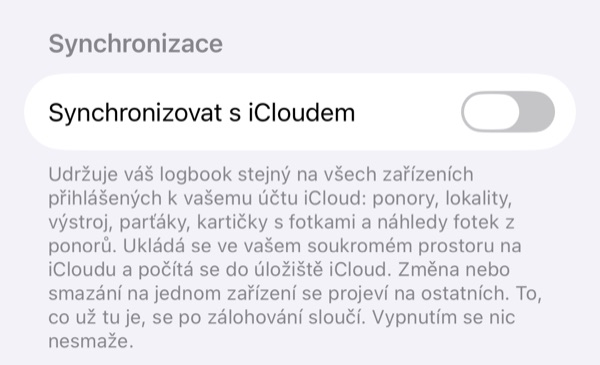
Export, body obnovení a vymazání
| Úkon | iPhone a iPad | Mac |
|---|---|---|
| Export | Profil → Vaše data | Nabídka Soubor |
| Body obnovení | Profil → Vaše data → Body obnovení | Nastavení → Vaše data → Body obnovení |
- Export: UDDF je úplný export a vaše cesta ven do jakéhokoli logbooku. K dispozici je také tabulka (CSV), MacDive XML, záložky pro jeskynní mapování (CSV) a souhrn zkušeností (text) pro předpoklady kurzů.
- Body obnovení: bod se uloží před zapnutím synchronizace, před velkým importem, sloučením, spojením, vymazáním a před jakýmkoli smazáním. Obnovení nejprve uloží váš současný logbook jako bod obnovení, takže ho můžete vrátit zpět.
- Vymazání: Vymazat logbook… nabídne nejdřív export. Se zapnutou synchronizací se logbook vymaže i na vašich ostatních zařízeních.

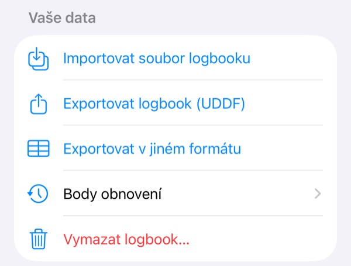
Pořád si nevíte rady?
Viz Řešení potíží, nebo pošlete zpětnou vazbu z TestFlightu či na brian@616labs.net.